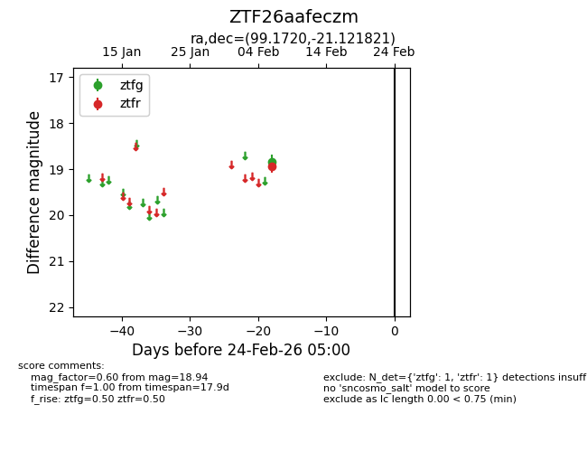
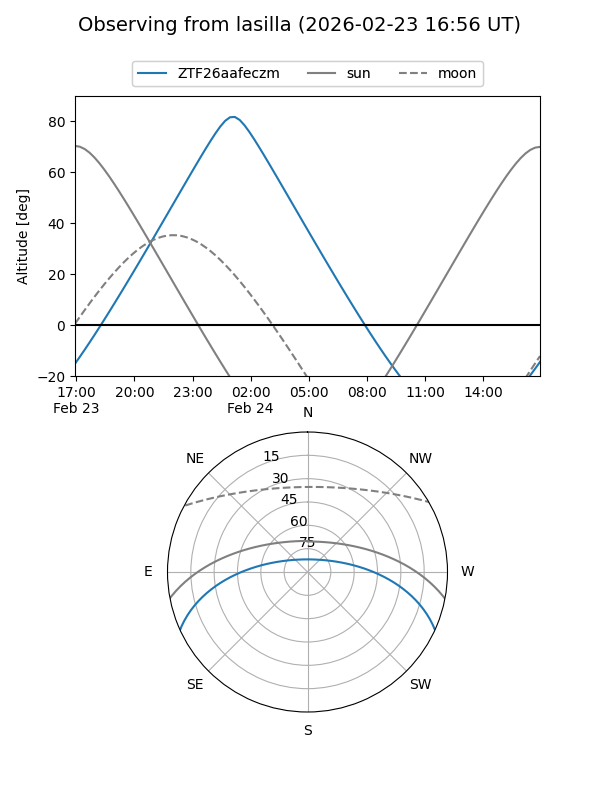
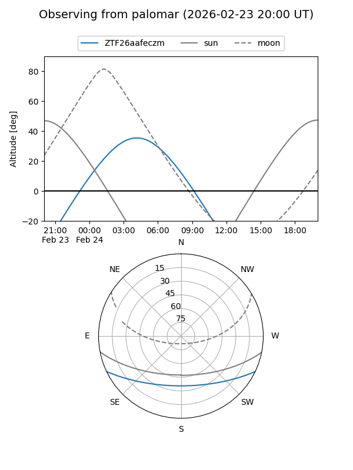

ZTF26aafeczm
Target ZTF26aafeczm at 2026-02-24 09:08
Aliases and brokers:
FINK: link
Lasair: link
ALeRCE: link
alt names
ZTF26aafeczm (ztf,fink_ztf)
Coordinates:
equatorial (ra, dec) = 99.1720,-21.12182
equatorial (HMS+DMS) = 06:36:41.27,-21:07:18.56
galactic (l, b) = (230.4233,-12.57448)
Flags:
Photometry:
last ztfg=18.85, ztfr=18.94
1 ztfg, 1 ztfr detections
Lightcurve

Visibility


Additional plots